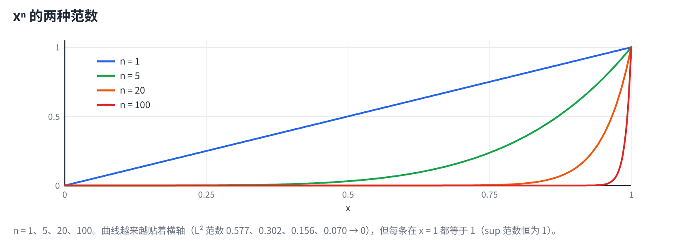
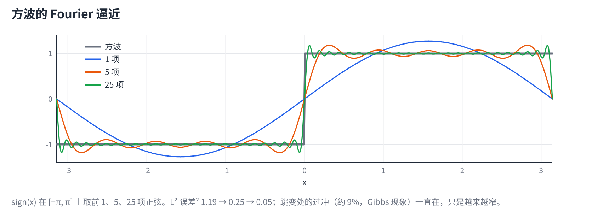
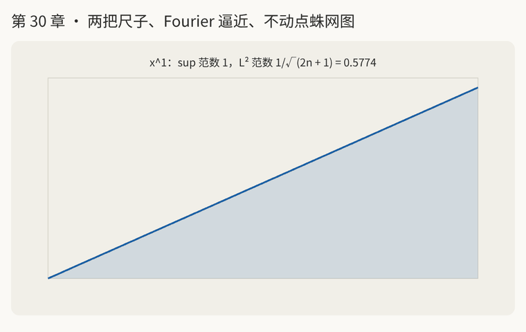

第 30 章 · 泛函分析入门：赋范空间、Banach 与 Hilbert 空间、算子与谱、不动点定理、RKHS
本地运行
git clone https://github.com/wikieden/math-and-eval-stats
cd math-and-eval-stats/code/notebooks
pip install jupyterlab torch numpy
jupyter lab ch30_functional_analysis.ipynb也可以下载后直接用 VS Code 打开 .ipynb 运行。需要 GPU 的章节在 Colab 里选「代码执行程序 → 更改运行时类型 → GPU」。
本章回答：把"函数"当成"向量"有什么用？同一串函数为什么用一种范数看收敛、换一种就不收敛？Banach 空间、Hilbert 空间多了什么？积分算子的"特征值"是什么？为什么 Bellman 迭代一定收敛？核方法为什么能在无穷维空间里做回归？
讲解日期：2026-11-25 · 上一章：第 29 章 测度论概率入门 · 下一章：第 31 章 微分几何与流形优化
对应原文：Hunter & Nachtergaele《Applied Analysis》math-and-eval-stats/materials/text/books/hunter-nachtergaele-applied-analysis/：第 3 章压缩映射定理（ch3.txt 转录乱码，按 PDF 读）、第 5 章 Banach 空间（ch5.txt：§5.1 L20 起、例 5.3–5.4 L44–L51；§5.2 有界线性映射 L213；§5.4 有限维 Banach 空间 L774）、第 6 章 Hilbert 空间（ch6.txt 乱码，按 PDF 读）、第 8 章 Hilbert 空间上的有界算子（ch8.txt：§8.1 正交投影 L15、§8.4 自伴算子 L487）
本章缩写：‖·‖ = 范数（向量或函数的"长度"）；L² = 平方可积函数空间，‖f‖₂ = (∫f²)^{1/2}；sup 范数 ‖f‖∞ = max|f|；⟨f, g⟩ = 内积；RKHS = Reproducing Kernel Hilbert Space（再生核 Hilbert 空间）；k(x, y) = 核函数；λ（本章第六步）= 岭回归的正则化系数。全部缩写见 附录 · 缩写与术语表
讲解
第一步：范数：同一串函数，换把尺子，收敛与否就不一样（2026-11-25）
类比：评价两张照片差多少。 可以看"最离谱的那个像素差多少"（sup 范数），也可以看"所有像素差的平方和"（L² 范数）。一张只有一个坏点的照片，前一种说"差很多"，后一种说"几乎一样"。
例子：f_n(x) = xⁿ 在 [0, 1] 上：
| n | sup 范数 | L² 范数 1/√(2n + 1) |
|---|---|---|
| 1 | 1 | 0.5774 |
| 10 | 1 | 0.2182 |
| 100 | 1 | 0.0705 |
L² 下 f_n → 0；sup 范数下不收敛到 0（靠近 x = 1 那一小段一直是 1）。有限维空间里所有范数都等价（H&N §5.4，L774），无穷维里不等价：说"收敛"必须说清用哪个范数。

图 30-1 · xⁿ 在 n = 1、5、20、100 时的曲线；曲线下的“平方面积”越来越小（L² → 0），但每条在 x = 1 处都碰到 1（sup 范数恒为 1）在哪用：图像生成用 L² 损失、对抗鲁棒性看 L∞ 扰动、最优传输（第 33 章）用 Wasserstein 距离，都是在选"尺子"。
一句话：函数也是向量，但无穷维里范数不等价；收敛、误差、鲁棒性都要先说用哪把尺子。
第二步：完备性：Banach 空间（2026-11-25）
类比：有理数轴上有"洞"。 1, 1.4, 1.41, 1.414, … 越挨越近（Cauchy 序列），但极限 √2 不在有理数里。完备 = 没有洞。
Banach 空间 = 完备的赋范空间（H&N 定义 5.1，L25）。例子：[a, b] 上的连续函数配 sup 范数是 Banach 空间（例 5.3，L44–L47）；可微函数配 sup 范数就不是（例 5.4，L49–L51：可微函数的一致极限不一定可微），连续函数配 L² 范数也不是（下面的例子）。
例子：连续函数 \(f_k(x) = 1/(1 + e^{-k(x - 0.5)})\) 越来越陡：
| 陡度 k | 10 | 100 | 1000 |
|---|---|---|---|
| 到阶跃函数的 L² 距离 | 0.1965 | 0.0622 | 0.0197 |
这串连续函数在 L² 下越挨越近，极限却是不连续的阶跃函数：连续函数空间在 L² 下"有洞"，要把它补全成 L²。
为什么关心：很多存在性定理（最优解存在、迭代有极限）都要求完备；"神经网络能逼近某个函数"讨论的也是在哪个完备空间里逼近。
一句话：Banach 空间 = 完备的赋范空间，Cauchy 序列一定有极限；同一个函数集合换范数可能就不完备。
第三步：Hilbert 空间：有内积，就有角度、投影和正交展开（2026-11-25）
Hilbert 空间 = 内积诱导范数的 Banach 空间（如 L²：⟨f, g⟩ = ∫fg）。有了内积，就有正交、投影（H&N §8.1，L15）、正交基展开、Parseval 等式。
例子：[−π, π] 上的方波 sign(x) 展开成正弦级数 \(\frac4\pi\sum_k\frac{\sin((2k - 1)x)}{2k - 1}\)：
| 前几项 | L² 误差² | Parseval 算的剩余能量 |
|---|---|---|
| 1 | 1.1902 | 1.1902 |
| 5 | 0.2538 | 0.2538 |
| 25 | 0.0509 | 0.0509 |
Parseval：总能量 = 各系数平方和；截断误差 = 没用上的系数的平方和。这就是"用前 k 个主成分 / 奇异向量逼近"的无穷维版本（第 12 章 SVD）。

图 30-2 · 灰：方波；蓝、橙、绿：前 1、5、25 项；跳变处的过冲（Gibbs 现象）不消失，但 L² 误差趋于 0一句话：Hilbert 空间有内积，于是有投影和正交展开；截断误差 = 丢掉的系数平方和（Parseval）。
第四步：算子与谱：积分算子也有特征值（2026-11-25）
类比：矩阵是"有限维的函数到函数的映射"，积分算子是"无穷维的矩阵"。
对称核给出自伴算子（H&N §8.4，L487），有实特征值和正交特征函数，和对称矩阵的谱分解一样。
例子（k(x, y) = min(x, y)，布朗运动的协方差核）：离散成 1000×1000 矩阵求特征值，和解析值 \(1/((j - \tfrac12)^2\pi^2)\) 对照：
| j | 离散 | 解析 |
|---|---|---|
| 1 | 0.4053 | 0.4053 |
| 2 | 0.0450 | 0.0450 |
| 3 | 0.0162 | 0.0162 |
特征值衰减得很快：布朗运动的路径几乎全部"能量"在前几个特征函数上（Karhunen–Loève 展开，就是函数版的 PCA）。
一句话：积分算子是无穷维矩阵，对称核有谱分解；特征值的衰减速度决定"用几个基函数就够"。
第五步：Banach 不动点定理（2026-11-25）
定理（H&N 第 3 章）：完备度量空间上的压缩映射 T（‖Tx − Ty‖ ≤ q‖x − y‖，q < 1）有唯一不动点，从任何起点迭代都以 qᵏ 的速度收敛。第 23 章的值迭代就是它的一个例子（q = γ）。
例子：x ← cos x。在 [cos 1, 1] 上 |cos′x| = |sin x| ≤ sin 1 ≈ 0.84 < 1，是压缩映射：
- 不动点 0.739085；相邻差 0.46、0.317、0.203、0.139…，第 20 次 2.47 × 10⁻⁴；
- 后期每次的比值 ≈ 0.6736 = |sin x*|：收敛速度由不动点处的导数决定。
为什么要"完备"：迭代序列是 Cauchy 序列，完备才保证极限在空间里（第二步）。
一句话：压缩映射在完备空间里有唯一不动点，迭代按 qᵏ 收敛；值迭代、Picard 迭代、很多"反复套直到不动"的算法都靠它。
第六步：RKHS 与核方法：表示定理把无穷维问题变成 n 维（2026-11-25）
RKHS：一个函数的 Hilbert 空间，里面"在 x 点取值"可以写成内积：\(f(x) = \langle f, k(x, \cdot)\rangle\)（再生性质）。每个正定核 k（如高斯核）对应一个 RKHS。
表示定理：\(\min_f\sum_i(y_i - f(x_i))^2 + \lambda\|f\|_H^2\) 的解一定是 \(f = \sum_i\alpha_ik(x_i, \cdot)\)，\(\alpha = (K + \lambda I)^{-1}y\)。在无穷维空间里优化，答案只需要 n 个系数。
例子（20 个点，y = sin 2πx + 0.1 噪声，高斯核宽 0.2，λ = 10⁻³）：训练均方误差 0.0022，和真函数 sin 2πx 的均方误差 0.0063。
在哪用：高斯过程回归（就是核岭回归加上不确定性）、SVM、注意力 = 核平滑（第 37 章）、神经正切核（无限宽网络的训练等价于核回归）。
场景代码：scikit-learn 的核岭回归（真实库调用；本书环境没装 sklearn，没跑过）：
from sklearn.kernel_ridge import KernelRidge
model = KernelRidge(kernel="rbf", gamma=1 / (2 * 0.2 ** 2), alpha=1e-3).fit(x[:, None], y)
y_hat = model.predict(grid[:, None]) # 内部就是 α = (K + λI)⁻¹y，再算 Σ α_i k(x_i, x)
一句话：RKHS 里取值是内积，表示定理保证最优解是 n 个核函数的组合，于是无穷维回归只要解一个 n×n 线性方程。
动画演示：范数之争与不动点迭代

可交互版：animations/30-functional-analysis.html（下拉切换"xⁿ 的两种范数 / Fourier 逼近 / cos 不动点"；滑块调 n 或项数）。
怎么看：
- xⁿ：n 变大，曲线贴向横轴，右上角 L² 范数变小但 sup 范数一直是 1（第一步）；
- Fourier：项数加多，蓝线越来越贴方波，跳变处的过冲始终在（第三步）；
- cos 不动点：蛛网图，折线在 y = cos x 和 y = x 之间来回，收向交点（第五步）。
练习与作答记录
题 1（第一步）：在 R² 里，‖x‖∞ ≤ ‖x‖₂ ≤ c‖x‖∞ 的最小常数 c 是多少？在 Rⁿ 里呢？这说明有限维和无穷维有什么不同？
作答：（待作答）
题 2（第三步）：f(x) = x 在 [−π, π] 上的 L² 范数平方是多少？如果只保留它 Fourier 展开的第一项 2 sin x，剩余能量是多少？
作答：（待作答）
题 3（第五步）：x ← 0.5x + 1 是压缩映射吗？压缩系数是多少？从 x = 0 出发，要几步才能让误差小于 10⁻³？
作答：（待作答）
口诀
函数也是向量，无穷维里尺子不等价；
完备才没有洞，Cauchy 序列有归宿；
有内积就有投影，截断误差是丢掉的系数平方和；
积分算子是无穷维矩阵，特征值衰减定维数；
压缩映射唯一不动点，核方法只要 n 个系数。
本章复习卡片
ST102（范数不等价、Banach 空间与完备性）、ST103（Hilbert 空间、Parseval、积分算子的谱）、ST104（Banach 不动点定理；RKHS 与表示定理）。练习做完后，按答错、卡住的地方补上。
附录 · 延伸阅读
留给以后深入学习用，不影响本章主线。★ 是建议先读的。
推荐阅读
| 读什么 | 读哪里 | 读它为了什么 |
|---|---|---|
| ★ Hunter & Nachtergaele | 第 5 章 §5.1–5.4（ch5.txt L20–L918） | Banach 空间、有界线性映射 |
| ★ Hunter & Nachtergaele | 第 6 章（读 PDF）、第 8 章 §8.1、§8.4（ch8.txt L15、L487） | Hilbert 空间、投影、自伴算子 |
| Hunter & Nachtergaele | 第 3 章（读 PDF） | 压缩映射定理的证明 |
| 第 23 章 MDP 与 Bellman | 第三步 | 不动点定理在 RL 里的用法 |
| 第 12 章 SVD 与最小二乘 | 全章 | 有限维的投影与截断 |
数学原理
- 范数等价：有限维中 \(c_1\|x\|_a \le \|x\|_b \le c_2\|x\|_a\)；无穷维中不一定存在这样的常数。
- 投影定理：Hilbert 空间中闭子空间 M 上，每个 x 有唯一最近点 Px，且 x − Px ⊥ M。
- Parseval：标准正交基 {e_k} 下 \(\|f\|^2 = \sum|\langle f, e_k\rangle|^2\)。
- Mercer 定理：连续正定核 \(k(x, y) = \sum\lambda_j\phi_j(x)\phi_j(y)\)，λ_j、φ_j 是积分算子的特征值、特征函数。
- 表示定理：任何 f 都能写成"核函数张成的部分 + 正交补"，正交补部分不影响训练点上的取值、只增加范数，所以最优解里它为 0。
公式清单
| 公式 | 意思 |
|---|---|
| \(\|f\|_2 = (\int f^2)^{1/2}\)，\(\|f\|_\infty = \max\lvert f\rvert\) | 两种常用范数 |
| \(\|f\|^2 = \sum_k\lvert c_k\rvert^2\) | Parseval |
| \((Kf)(x) = \int k(x, y)f(y)dy\) | 积分算子 |
| \(\|Tx - Ty\| \le q\|x - y\|\)，q < 1 | 压缩映射 |
| \(f = \sum\alpha_ik(x_i, \cdot)\)，\(\alpha = (K + \lambda I)^{-1}y\) | 表示定理 / 核岭回归 |
代码对照：把本章的数字用代码算一遍
代码在仓库本地
math-and-eval-stats/solutions/chapter-code/ch30_functional_analysis.py，配套测试tests/test_ch30.py：
bash cd math-and-eval-stats/solutions/chapter-code uv run python ch30_functional_analysis.py uv run pytest tests/test_ch30.py
讲义 ↔ 代码：
| 讲义 | 公式 | 写法 | 跑出来 |
|---|---|---|---|
| 第一步 范数 | 1/√(2n + 1) | xn_norms(10) |
0.2182 |
| 第二步 完备性 | L² 距离 | step_gap(1000) |
0.0197 |
| 第三步 Parseval | 误差 = 剩余能量 | square_wave_error(5) |
0.2538 |
| 第四步 谱 | 离散特征值 | brownian_kernel_eigs() |
0.4053, 0.0450, 0.0162 |
| 第五步 不动点 | x ← cos x | cos_fixed_point() |
0.739085 |
| 第六步 RKHS | (K + λI)⁻¹y | kernel_ridge() |
0.0022、0.0063 |
关键几行：
np.linalg.eigvalsh(np.minimum.outer(x, x) / m) # 积分算子 → 矩阵（中点法，每格权重 1/m）
alpha = np.linalg.solve(k(x, x) + lam * np.eye(n), y) # 表示定理的系数
fg = k(g, x) @ alpha # f(x) = Σ α_i k(x_i, x)
代码里才看得到的 3 件事：
- 积分要乘网格宽度：离散化积分算子时矩阵要除以 m（每个格子宽 1/m），否则特征值会大 m 倍。
- L² 距离用
np.trapezoid在 20 万个点上数值积分：阶跃函数在 0.5 处不连续，网格要够细，否则 k = 1000 的结果不准。 - Parseval 的剩余能量：方波的总能量 ∫sign² = 2π，每项 b_k sin 的能量是 π b_k²，代码用这两个数相减。
自己改一改（不影响练习答案）：
- 把核岭回归的 λ 改成 1 和 10⁻⁸，看欠拟合和过拟合。
- 把核换成 k(x, y) = min(x, y) − xy（布朗桥），离散特征值和 1/(j²π²) 比一比。